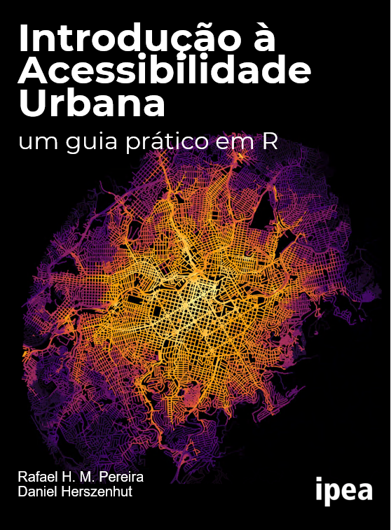

Introdução à acessibilidade urbana
um guia prático em R
Apresentação

O objetivo deste livro é apresentar uma introdução sobre os conceitos e habilidades práticas necessárias para fazer estudos e avaliações de impacto sobre acessibilidade urbana. O livro começa dando uma visão geral sobre o conceito e indicadores de acessibilidade. Em seguida, ensina como analisar dados espaciais e de redes de transporte para se calcular estimativas de acessibilidade por diferentes modos de transporte e como visualizar esses resultados em mapas e gráficos. O livro também busca familiarizar o leitor com dados de redes de transporte público em formato GTFS e ensina como manipular e visualizar esse tipo de dado. Num dos seus principais capítulos, o livro ensina ainda como os dados e metodologia apresentados nos capítulos anteriores podem ser utilizados para avaliar o impacto de projetos de transporte sobre as condições de acesso a oportunidades da população. Por fim, o livro ensina como baixar, analisar e visualizar estimativas de acessibilidade já calculadas para cidades brasileiras e disponibilizadas pela equipe do Projeto Acesso a Oportunidades (AOP) do Ipea.
O tema da acessibilidade tem recebido cada vez mais atenção de agências de transporte, instituições de financiamento, tomadores de decisão e pesquisadores na área de planejamento urbano e de transportes (Papa et al. 2015; Boisjoly and El-Geneidy 2017). Com isso, existe um crescente número de artigos científicos (Miller 2018; van Wee 2021) e livros (Levine, Grengs, and Merlin 2019; Levinson and King 2020) que trazem rico material para discussão e aprofundamento sobre questões relacionadas à acessibilidade urbana. No entanto, não existem na literatura livros ou artigos que sirvam simultaneamente de material didático introdutório sobre o tema e de manual prático de metodologia e análise de dados. A ausência desse tipo de material explica, ao menos em parte, porque diversas agências de transporte e analistas ainda enfrentam desafios em incorporar questões e indicadores de acessibilidade no seu dia-a-dia de planejamento e pesquisa (Silva et al. 2017; Büttner 2021).
Este livro foi escrito pensando nas necessidades de trabalho de gestores públicos, analistas, alunos e pesquisadores de planejamento e transporte urbano. Por isso, o livro tem caráter prático. Todo material do livro é apresentado com exemplos reproduzíveis e dados abertos utilizando-se programação em R. O objetivo é equipar seus leitores com os conceitos fundamentais e as ferramentas de análise e processamento de dados necessárias para realizar análises de acessibilidade urbana e conduzir avaliações do impacto de projetos e políticas de transporte a partir de dados e programas de código abertos.
Organização do livro
Este livro está dividido em 5 seções:
- Seção 1: A primeira seção apresenta o conceito de acessibilidade urbana, esclarece a diferença entre acessibilidade e mobilidade urbana, e apresenta os principais indicadores usados para medir a acessibilidade urbana.
- Seção 2: A segunda seção ensina como calcular estimativas de acessibilidade urbana em R usando os pacotes r5r e accessibility a partir de dados públicos abertos.
- Seção 3: A terceira seção apresenta o que é a especificação GTFS de dados de transporte público, e mostra como trabalhar e analisar dados de GTFS usando o pacote gtfstools.
- Seção 4: A quarta seção mostra como o conhecimento dos capítulos anteriores pode ser utilizado para se avaliar o impacto de políticas urbanas sobre condições de acessibilidade urbana usando R.
- Seção 5: Por fim, a quinta seção mostra como fazer download e analisar os dados do projeto Acesso a Oportunidades (AOP) para analisar a distribuição espacial e socioeconômica das condições de acesso a oportunidades nas cidades brasileiras.
Código reproduzível
Este livro traz diversos exemplos reproduzíveis de análise de dados em R. A maneira mais fácil de você rodar todo o código do livro no seu navegador (web browser) é utilizando o Binder. Clicando neste link, você será direcionado para uma sessão do RStudio dentro do seu navegador onde você poderá abrir e rodar os scripts de todos os capítulos do livro.
Este livro foi escrito e publicado com o sistema de publicação Quarto. Todo o código utilizado em seu preparo e na sua publicação do pode ser encontrado neste repositório.
Se você quiser rodar o conteúdo do livro localmente na sua máquina, você pode clonar o repositório do livro e ter o RStudio instalado. Após abrir o projeto intro_access_book.Rproj, basta rodar a função:
quarto::quarto_preview().
Licença de uso
 É permitida a reprodução e a exibição para uso educacional ou informativo, desde que respeitado o crédito ao autor original e citada a fonte. Permitida a inclusão da obra em Repositórios ou Portais de Acesso Aberto, desde que fique claro para os usuários os termos de uso da obra e quem é o detentor dos direitos autorais, o Instituto de Pesquisa Econômica Aplicada (Ipea). Proibido o uso comercial ou com finalidades lucrativas em qualquer hipótese. Proibida a criação de obras derivadas. Para imagens estáticas e em movimento (vídeos e audiovisuais), ATENÇÃO: os direitos de imagem foram cedidos apenas para a obra original, formato de distribuição e repositório. Esta licença está baseada em estudos sobre a Lei Brasileira de Direitos Autorais (Lei 9.610/1998).
É permitida a reprodução e a exibição para uso educacional ou informativo, desde que respeitado o crédito ao autor original e citada a fonte. Permitida a inclusão da obra em Repositórios ou Portais de Acesso Aberto, desde que fique claro para os usuários os termos de uso da obra e quem é o detentor dos direitos autorais, o Instituto de Pesquisa Econômica Aplicada (Ipea). Proibido o uso comercial ou com finalidades lucrativas em qualquer hipótese. Proibida a criação de obras derivadas. Para imagens estáticas e em movimento (vídeos e audiovisuais), ATENÇÃO: os direitos de imagem foram cedidos apenas para a obra original, formato de distribuição e repositório. Esta licença está baseada em estudos sobre a Lei Brasileira de Direitos Autorais (Lei 9.610/1998).
Como citar o livro
Caso você use o material deste livro, pedimos por gentileza que você cite o livro utilizando a seguinte referência:
- Pereira, Rafael H. M. & Herszenhut, Daniel. (2022) Introdução à acessibilidade urbana um guia prático em R. Instituto de Pesquisa Econômica Aplicada.
Agradecimentos
Este livro foi elaborado pelo Instituto de Pesquisa Econômica Aplicada (Ipea) no âmbito da parceria entre Ipea e a Secretaria de Mobilidade e Desenvolvimento Regional e Urbano (SMDRU) do Ministério do Desenvolvimento Regional (MDR).